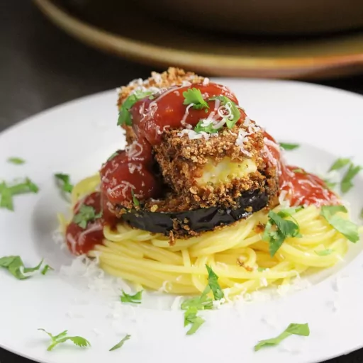

Halloumi Parmigiana

Description
Breaded and fried halloumi adds a new dimension to an Italian favorite. It's a multitasking recipe, but produces
a complete meal. It's definitely worth the effort.
Ingredients
- 1 small eggplant, cut into 1/2-inch rounds
- 1 tablespoon salt
- 1 large egg
- 1 cup bread crumbs
- 2 teaspoons dried oregano
- 1/2 teaspoon ground black pepper
- 1/4 teaspoon ground cayenne pepper
- 1 cup oil for frying, or as needed
- 1 (8.8 ounce) package halloumi cheese, cut into 4 sticks
- 1/2 (16 ounce) package spaghetti
- 1 tablespoon extra-virgin olive oil
- 1 1/4 cups spaghetti sauce
- 8 tablespoons finely grated Parmigiano-Reggiano cheese
Steps
- Place sliced eggplant into a large pot. Cover with salt and add enough water to cover. Place a plate on top
of the rounds to keep them submerged; allow to sit for 10 minutes.
- While eggplant soaks, whisk egg in a shallow dish. Combine bread crumbs, oregano, black pepper, and cayenne
pepper in another shallow dish.
- Heat oil in a deep skillet over medium-high heat.
- Drain eggplant and discard water. Rinse eggplant and squeeze out as much water as possible. Pat slices dry
with paper towels. Dredge eggplant slices in egg and then bread crumb mixture and place on a plate. Dredge
halloumi cheese sticks in egg and then bread crumb mixture and place on a plate.
- Fry breaded eggplant slices in the hot oil until browned, about 2 minutes. Flip and fry on the other side,
about 2 minutes more. Drain on clean paper towels. Repeat with halloumi cheese sticks.
- Meanwhile bring a large pot of lightly salted water to a boil. Cook spaghetti in the boiling water, stirring
occasionally, until tender yet firm to the bite, about 12 minutes. Toss cooked pasta with extra-virgin olive
oil.
- Pour spaghetti sauce into a small saucepan and heat over medium heat until hot, about 5 minutes.
- Divide cooked spaghetti onto 4 plates. Evenly distribute eggplant and halloumi cheese. Top with equal
amounts of spaghetti sauce and Parmigiano-Reggiano cheese.
[Home Page]